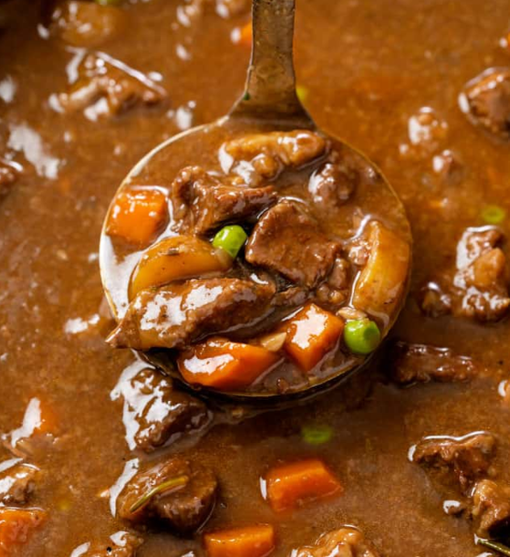
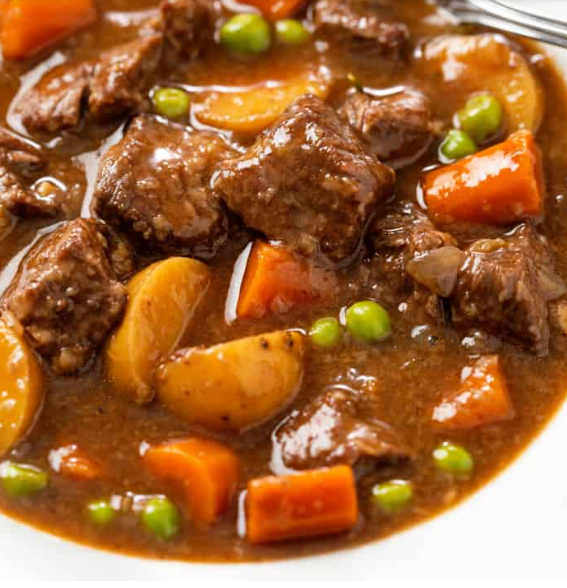

From left to right: finished stew, ladding, and in your disk


Ingredients
- 2 lbs beef stew meat, cut into 1" cubes
- 1/4 cup al-purpose flour
- 1/2 tsp salt
- 1/2 tsp ground black pepper
- 1 clove garlic; minced
- 1 bay leaf
- 1 tsp paprika
- 1 tsp Worcestershire sauce
- 1 onion, chopped
- 1 1/2 cups beef broth
- 2 potatoes, diced
- 4 carrots, sliced
- 1 stalk celery, chopped
Directions
- Place meat in slow cooker; add garlic, bay leaf, paprika,
Worcestershire sauce, onion, broth, potatoes, carrots, and celery.
- In a small bowl, mix flour, salt, and pepper; sprinkle over meat
and stir to coat.
- Cover and cook on Low for 10–12 hours or on High for 4–6 hours.
- Remove bay leaf, stir gently, and serve hot.
Ingredient Terms
- Beef Stew Meat
- Well-marbled beef trimmed and cut into 1-inch cubes for even cooking.
- note terms can have more that one definition
- Worcestershire Sauce
- A fermented liquid condiment that adds umami and depth of flavor.
- Bay Leaf
- Leaf of the bay laurel tree; infuses a subtle herbal aroma.